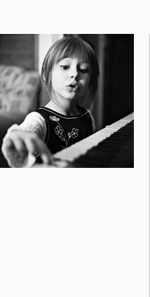

Cours de piano
Cathy Lachapelle accueille ses élèves dans une classe de piano motivante et chaleureuse où plusieurs activités musicales sont proposées aux personnes de tous âges. L’objectif est de développer leurs compétences artistiques et instrumentales. Elle offre une formation classique ouverte sur les différents styles musicaux. Elle prépare un programme musical pour chaque élève qui répond à ses besoins musicaux. Au programme : des pièces, de la technique instrumentale, de la théorie, du solfège et de la dictée.
Les élèves ont la possibilité de participer à plusieurs activités telles que des classes d’ensemble, des cours de groupe, des projets et des concerts de fin de session.
S’ils le désirent, les élèves ont l’opportunité de participer à différents programmes tels que les examens de l’École préparatoire Anna-Maria Globensky de l’Université Laval, le Concours de musique de la Capitale et le Concours de musique du Canada.
Bienvenue à tous !